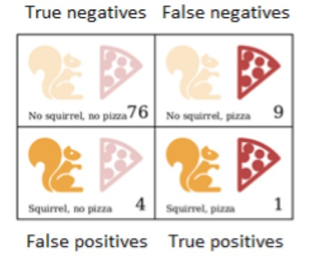

Entrega Squirrel
Descripción del problema
Every now and then, usually between 8 p.m. and 10 p.m., Jacques finds himself transforming into a small furry rodent with a bushy tail.
On one hand, Jacques is quite glad that he doesn’t have classic lycanthropy. Turning into a squirrel does cause fewer problems than turning into a wolf. Instead of having to worry about accidentally eating the neighbor (that would be awkward), he worries about being eaten by the neighbor’s cat. After two occasions where he woke up on a precariously thin branch in the crown of an oak, naked and disoriented, he has taken to locking the doors and windows of his room at night and putting a few walnuts on the floor to keep himself busy.
That takes care of the cat and tree problems. But Jacques would prefer to get rid of his condition entirely. The irregular occurrences of the transformation make him suspect that they might be triggered by something. For a while, he believed that it happened only on days when he had been near oak trees. But avoiding oak trees did not stop the problem.
Switching to a more scientific approach, Jacques has started keeping a daily log of everything he does on a given day and whether he changed form. With this data he hopes to narrow down the conditions that trigger the transformations.
From the set of data2 determine which events are more and less correlated with the transformation of Jacques. Specifically, use the Matthews Correlation Coefficient (MCC)3 to determine the correlation between the events. The MCC is defined as follows: $$MCC = {TP \times TN - FP \times FN \over \sqrt{(TP + FP)(TP + FN)(TN + FP)(TN + FN)}}.$$
A sample of the confusion matrix is presented above. The matrix provides the relation between the conversion into a squirrel and eating pizza.
The values for TP (true positives), TN (true negatives), FP (false positives), and FN (false negatives) are the following:
- true positives (TP) = 1
- true negatives (TN) =76
- false positives (FP) = 4
- and false negatives (FN) = 9
Eventos
| # | Events | Squirrel |
|---|
Correlación de eventos
| # | Event | Correlation |
|---|